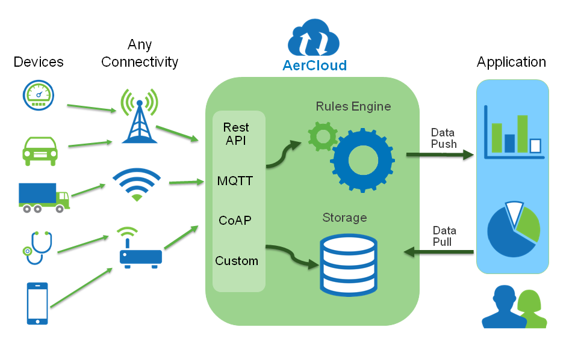
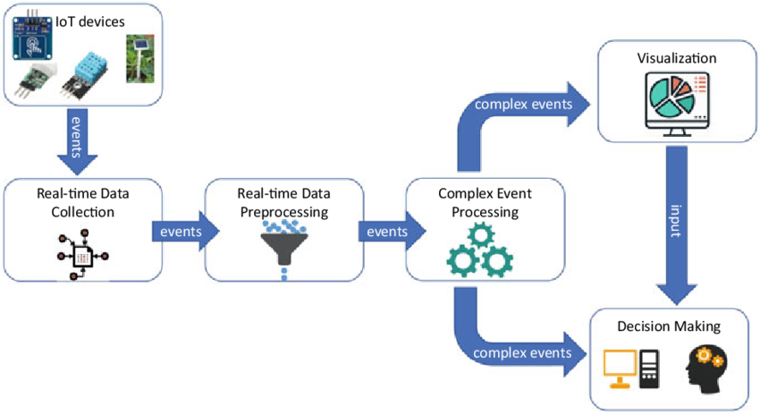
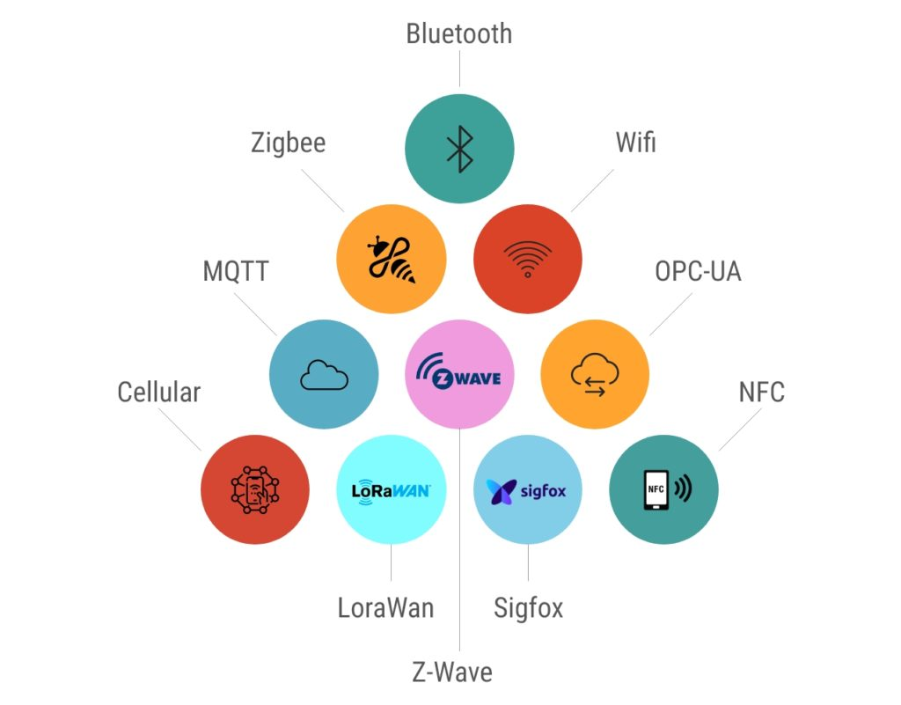
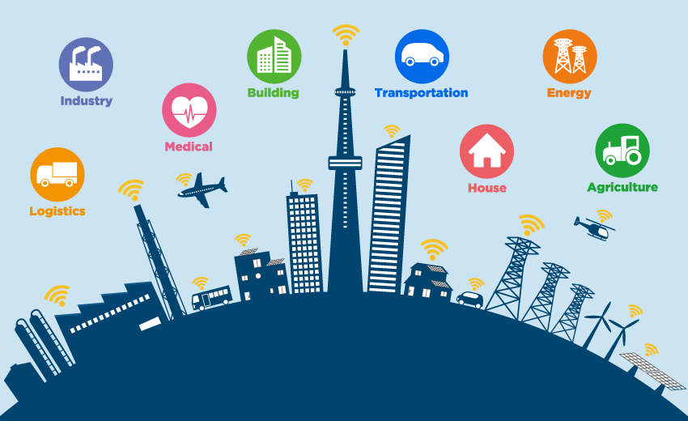

¡Descubre el Mundo Conectado del IoT!
¿Sabías que tu nevera podría avisarte cuando falta leche? ¿O que las luces de tu casa podrían encenderse solas al llegar? Esto es parte de lo que llamamos el Internet de las Cosas (IoT).
El IoT se refiere a la idea de que objetos cotidianos (desde electrodomésticos hasta coches) pueden conectarse a internet, recoger y enviar datos, y así interactuar entre sí y con nosotros. En esta unidad, vamos a explorar cómo funciona esta red de objetos inteligentes y cómo está cambiando nuestro mundo.
- - ¡El mundo se está conectando!
1. Definición y Componentes del IoT
El Internet de las Cosas (IoT) es una red de objetos físicos que están equipados con sensores, software y otras tecnologías para conectarse e intercambiar datos con otros dispositivos y sistemas a través de internet.
Componentes clave de un sistema IoT:
- Dispositivos/Cosas: Son los objetos físicos (sensores, actuadores, electrodomésticos, vehículos, etc.) que recogen datos o realizan acciones.
- Ejemplos: Un termostato inteligente, una pulsera de actividad, una cámara de seguridad.
- Conectividad: Cómo se comunican los dispositivos con la nube o entre sí.
- Ejemplos: Wi-Fi, Bluetooth, 5G, LoRaWAN.
- Plataforma IoT (Cloud): Es el "cerebro" en la nube donde se recogen, almacenan y procesan los datos de los dispositivos.
- Ejemplos: Google Cloud IoT, AWS IoT.
- Interfaz de Usuario: Cómo interactuamos con el sistema IoT (aplicaciones móviles, paneles de control).
- Ejemplos: Una app en tu móvil para controlar las luces, un panel web para ver datos de sensores.

- - Los elementos clave que forman un sistema IoT.
¡Actividad Práctica! Haz una lista de 3 objetos de tu casa que podrían ser parte del IoT y qué componentes (sensor, actuador, conectividad) crees que tendrían.
2. ¿Cómo Funciona el IoT? El Flujo de Datos
El funcionamiento del IoT sigue un ciclo básico de cuatro pasos:
- 1. Recolección de datos: Los sensores integrados en los dispositivos IoT recogen datos del entorno (temperatura, humedad, movimiento, etc.).
- 2. Envío de datos: Estos datos se envían a la nube a través de la conectividad (Wi-Fi, Bluetooth, etc.).
- 3. Procesamiento de datos: En la nube, los datos se analizan y se toman decisiones. Aquí es donde la IA puede entrar en juego para interpretar los datos.
- 4. Acción/Respuesta: Basándose en el análisis, el sistema puede enviar una instrucción a un actuador (ej. encender una luz, ajustar un termostato) o enviarnos una notificación.
Este ciclo permite que los dispositivos "sientan", "piensen" (en la nube) y "actúen" en el mundo físico.

- - El camino que siguen los datos en un sistema IoT.
¡Actividad Práctica! Dibuja el flujo de datos para un sistema IoT que detecta si una planta necesita agua y la riega automáticamente. Identifica cada uno de los 4 pasos.
3. Tipos de Comunicaciones en Dispositivos IoT
Para que los dispositivos IoT puedan enviar y recibir información, utilizan diferentes tecnologías de comunicación. La elección depende de la distancia, la cantidad de datos y el consumo de energía.
Algunos tipos comunes de comunicación:
- Wi-Fi: Ideal para distancias cortas y grandes cantidades de datos (ej. cámaras de seguridad, televisores inteligentes).
- Bluetooth: Para distancias muy cortas y bajo consumo de energía (ej. auriculares inalámbricos, pulseras de actividad).
- Celular (4G/5G): Para largas distancias y cuando no hay Wi-Fi (ej. coches conectados, rastreadores de activos).
- LoRaWAN: Para largas distancias y muy bajo consumo de energía, ideal para sensores que envían pocos datos (ej. sensores agrícolas, contadores de agua).
- Ethernet: Conexión por cable, muy rápida y segura, para dispositivos fijos (ej. algunos sistemas de domótica avanzados).

- - Diferentes formas de conectar el mundo.
¡Actividad Práctica! Investiga qué tipo de comunicación usa tu móvil para conectarse a internet en casa y fuera de casa. ¿Por qué crees que usa diferentes tipos?
4. Aplicaciones del IoT: ¡El Mundo Inteligente!
El IoT tiene aplicaciones en casi todos los aspectos de nuestra vida. Nos ayuda a hacer las cosas más eficientes, cómodas y seguras.
Ejemplos de aplicaciones de IoT:
- Hogares Inteligentes (Smart Home): Termostatos, luces, cerraduras, aspiradoras robot, neveras conectadas.
- Ciudades Inteligentes (Smart City): Semáforos que se adaptan al tráfico, sensores de calidad del aire, gestión de residuos.
- Salud Conectada: Pulseras de actividad, monitores de ritmo cardíaco, pastilleros inteligentes.
- Agricultura Inteligente: Sensores de humedad del suelo, sistemas de riego automático, drones para monitorizar cultivos.
- Industria (Industria 4.0): Máquinas que se comunican entre sí para optimizar la producción, mantenimiento predictivo.

- - El IoT mejora nuestra vida diaria.
¡Actividad Práctica! Elige una aplicación de IoT que te parezca más interesante y explica cómo crees que funciona, mencionando al menos un sensor y un actuador que podría utilizar.
Proyecto Final de Unidad: "Mi Caso de Estudio IoT"
Para este proyecto, vas a investigar un sistema IoT específico que resuelva un problema del mundo real. Tu objetivo es comprender cómo sus componentes interactúan para lograr su funcionamiento global.
Puedes elegir un sistema como:
- Un sistema de luces inteligentes (ej. Philips Hue)
- Un termostato inteligente (ej. Nest)
- Un sistema de seguridad para el hogar conectado (cámaras, sensores de puertas)
- Un sistema de seguimiento de mascotas con GPS
- Un sistema de monitorización de la calidad del aire en una ciudad
Tareas a Realizar:
- 1. Descripción del Sistema:
- Describe el sistema IoT elegido y el problema del mundo real que resuelve.
- Identifica los dispositivos/cosas principales que lo componen (sensores, actuadores, etc.).
- Explica cómo estos dispositivos se comunican (tipo de conectividad).
- Describe brevemente el flujo de datos desde que se recogen hasta que se produce una acción o resultado.
- ¿Qué características principales tiene este sistema que lo hacen "inteligente" o útil?
- 2. Formato de Presentación:
Elige uno de los siguientes formatos para presentar tu investigación:
- Una presentación digital (ej. con Canva, Genially, Google Slides).
- Un póster informativo (digital o físico).
- Un informe escrito con ilustraciones.
Criterios trabajados:
- Criterio 1.1: Comprender el funcionamiento global de los sistemas de computación física, sus componentes y principales características.
Cuestionario: ¡Demuestra lo que sabes de IoT!
Responde a las siguientes preguntas para comprobar lo que has aprendido en esta unidad.